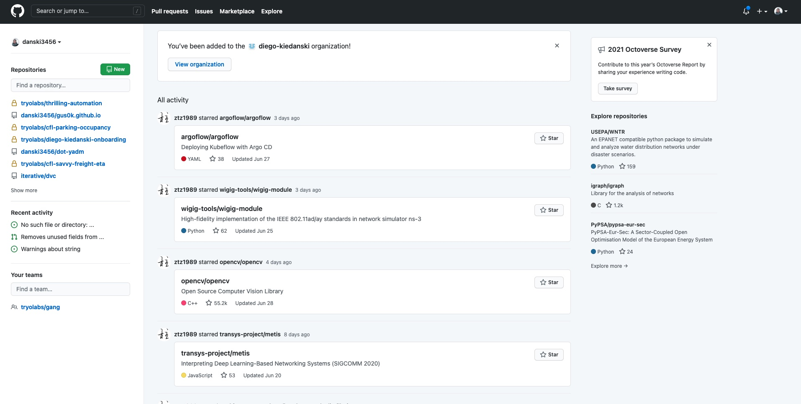
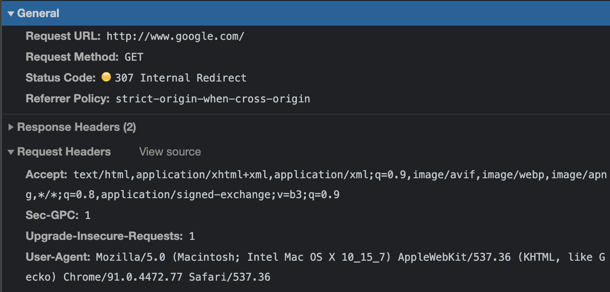
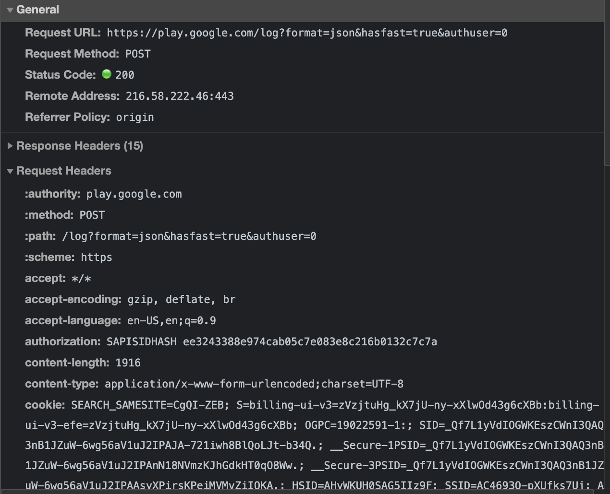
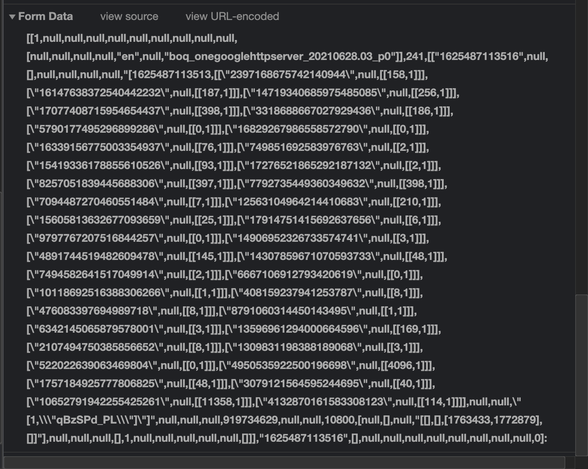

Diego Kiedanski
1 Agosto, 2021
| x_0 | x_1 | y |
|---|---|---|
| 0 | 1 | 2 |
| 2 | 2 | 4 |
| 4 | 3 | 6 |
When writing code, as with any other collaborative document we would like to:

graph TD;
A-->B;
A-->C;
B-->D;
C-->D;


FROM ubuntu:lastest
RUN pip install -y matplotlib pandas seaborn jupyter
CMD ["jupyter-notebook"]